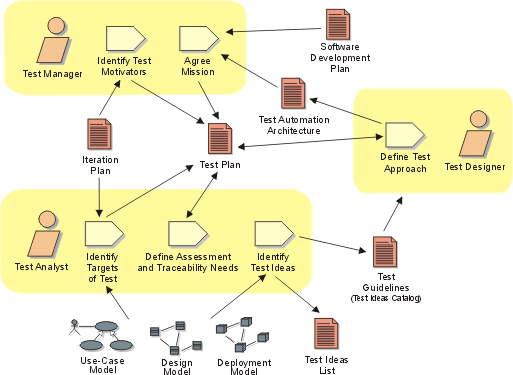

Disciplines >
Disciplines >
 Test >
Test >
 Workflow >
Define Evaluation Mission
Workflow >
Define Evaluation Mission
Disciplines >
Test >
Workflow >
Define Evaluation Mission
Workflow Detail:
|
Topics |
 |
The purpose of this workflow detail is to identify the appropriate focus of
the test effort for the iteration, and to gain agreement with stakeholders on
the corresponding goals that will direct the test effort.
For each iteration, this work is focused mainly on:
Although most of the roles involved in the Test discipline play a part in performing
this work, the effort is primarily centered around the Test
Manager and Test Analyst roles.
The most important skills required for this work include negotiation, elicitation,
strategy and planning.
Normally this work is addressed at the beginning of the iteration before the
other workflow details begin. As a heuristic for relative resource allocation
by phase, typical percentages of test resource use for this workflow detail
are: Inception — 50%, Elaboration — 25%, Construction — 10% and
Transition — 10%.
Note that this work is performed in each iteration. We recommend that you don't spend a lot of time on the detailed planning of testing tasks too far in advance of the iteration in which they are performed—as a general rule, don't plan detailed testing work further than one iteration ahead.
The main value in performing this work is to think through the various concerns and issues that will impact testing over the course of the iteration, and consider the appropriate actions you should take. As a general rule, don't spend excessive amounts of time on the presentation of the documentation for these aspects of the test effort.
The following references provide more detail to help guide you in performing this work:
For help with identifying the appropriate evaluation mission for the iteration:
For information about the underlying concepts behind this work:
|
Rational Unified
Process
|